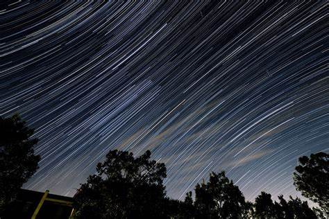
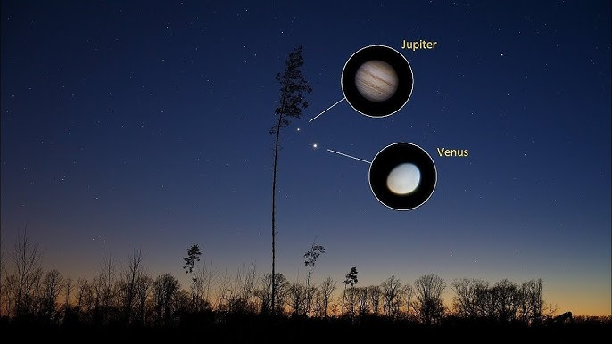

Upcoming Events

Featured Event
Total Solar Eclipse
Experience the awe-inspiring sight of a total solar eclipse as the Moon completely blocks the Sun's face.
April 8, 2024
Duration: ~4 minutes
Path: Mexico → USA → Canada
View Path Map

Meteor Shower
Lyrid Meteor Shower
Annual meteor shower producing bright dust trails lasting several seconds.
April 22-23, 2024
Peak Rate: 18/hour

Conjunction
Jupiter-Venus Conjunction
Witness the two brightest planets appear extremely close in the evening sky.
May 23, 2024
Visible: Evening